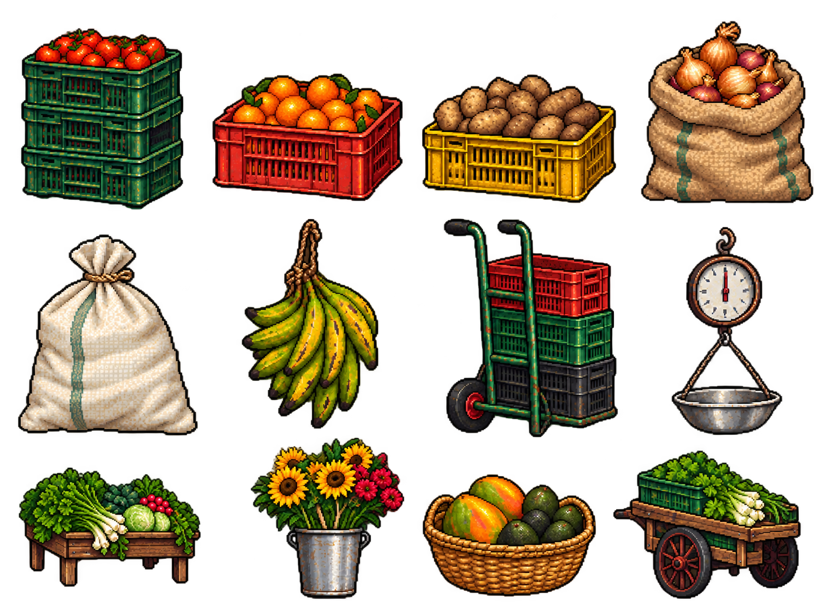

Plaza de Palomojao
Mercado cubierto · techo verde, puestos de frutas y pasillo de combate
Utilerías del mercado
Canastas, costales, plátanos, carretilla, báscula, mesa de verduras, flores, canasto y carro.

Mercado cubierto · techo verde, puestos de frutas y pasillo de combate
Canastas, costales, plátanos, carretilla, báscula, mesa de verduras, flores, canasto y carro.
